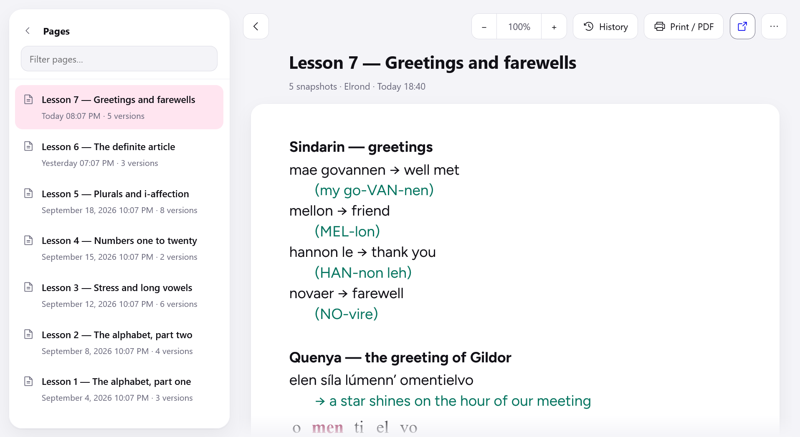
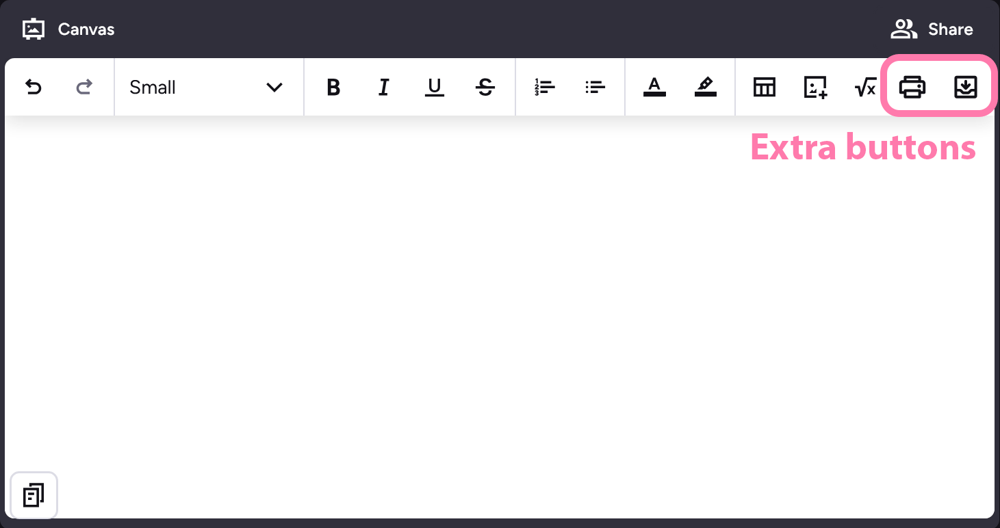

Your lesson notes, after the lesson.
Preply closes a lesson’s Canvas the moment it ends, and everything your tutor wrote goes with it. This extension keeps a copy — offline, with every version.

One classroom per tutor. Each page listed once, with every version behind it.
One button, and you stop losing notes.
A single archive button joins the Canvas toolbar during a lesson. Click it and the page is stored. Forget, and it saves on its own a minute after the last edit.

The whole footprint inside Preply, styled from the buttons already there.
Nothing leaves your browser.
No server, no account, no analytics — there is nothing to send anything to. Everything lands in local storage on your own machine, and uninstalling deletes it all.
The only traffic it causes goes to preply.com itself, while
you are already on a lesson page, to copy the images from your Canvas.
The parts that were actually hard.
Versions stay whole
Every save is stored complete and independent, never as a chain of differences. A damaged file costs one version, not the history behind it.
Search that knows Polish
Accents and case folded across a classroom — and ł is a
letter no normalisation decomposes. Type slonce, find
słońce.
Lines break where they broke
The reader reproduces the width, size and typeface of Preply’s editor, so an archived page wraps exactly as it did in class.
Images that survive
Preply serves them from links that expire in hours. They are copied in at capture, or the archive would quietly rot.
Running it today.
Neither store listing is live yet, so it runs from source.
- Firefox
about:debugging→ This Firefox → Load Temporary Add-on → picksrc/manifest.json- Chrome
- run
bash tools/package.sh, thenchrome://extensions→ Developer mode → Load unpacked → pickdist/chrome/
Only pages you open while it is installed can be captured. Lessons already past are out of reach.
Thanks.
To Paula, my Polish tutor and a formidable authority on sękacz, and to Shuang laoshi, my Chinese tutor. This exists to keep what the two of them teach me.